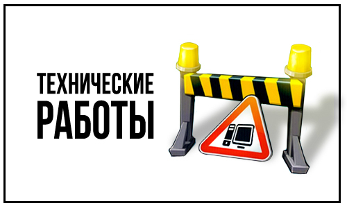

Администрирование
Описание не окончено, в работе
AdjustmentDB
БД расположена на Firebase Firestore, аккаунт uchastok.rir@gmail.com, проект AdjustmentDB
Надо понимать: только две таблицы доступны для записи пользователям AdjustmentDB, во все остальные НЕЛЬЗЯ ни изменить ни добавить данные ни в одном из подключенных к БД приложений, только я, как администратор, могу добавить/изменить таблицы по необходимости (добавить новый тип устройства, добавить нового пользователя и т.д.). Т.е. пользователь добавляет данные только в таблицу units (юниты) и в events (события), другие таблицы только для чтения, в них содержаться неизменяемые данные для работы приложений. Пользователи приложений AdjustmentWeb, AtomtexRepairs, RepairsTracker вообще не имеют доступа к записи каких либо данных, они используют БД только для чтения
id. В каждой коллекции (то же таблице) идентификатор — это имя документа, он же — primaryKey.
Deprecated
Не используется для поиска по БД, документ из БД берется по его названию. Нужен для получения названия
документа, когда приложение уже работает с объектом класса, полученного из документа. Можно было бы
использовать и для поиска по БД (where id == entity.getId), но я не использую. При том, что имя документа и
его id совпадают, можно в любой момент поменять логику, не меняя данные в БД. Id это не имя, так как
пользователь может поменять email и тогда будет два пользователя: со старым и новым email. Если же есть id
(просто номер), то поиск по такому id вернет все записи с этими двумя email вместе
Deprecatedname_id. Есть в каждой таблице (кроме units, у которых имя — это свойство связанного с юнитом девайса, и кроме names эта таблица и является собственно таблицей имен). Обозначает идентификатор, по которому в таблице имен (names) берется собственно имя, т.е. имена не хранятся в самих документах. Само имя может быть разным (точнее на разных языках), но сам идентификатор один, в зависимости от выбранного языка объекту по идентификатору присваивается имя. Процесс такой:
- у объекта берется name_id и по нему в таблице имен выбирается документ с таким id (с именами процесс немного сложнее, будет подробно описан далее)
- из документа выбирается имя на нужном языке
- это имя уже получает объект
Таблицы (коллекции)
device_set — комплекты устройств. Многие устройства относятся к какому-то комплекту (БДКГ-01 к 1117М) или к нескольким, или не относятся ни к какому. Добавлено для необходимости сгруппировать устройства по комплектам, чтобы как-то уменьшить размер списка в момент выбора названия устройства в диалоге, слишком много устройств
devices. Список всех возможных устройств. Нужно подчеркнуть — это не реальные устройства, а их описание, "чертежи".
employees. — список сотрудников. Это и ответственные за ремонт, и пользователи устройств с установленным AdjustmentDB.
- Пользователи приложения. Для работы приложения на устройстве необходимо выбрать пользователя (google аккаунт), который должен быть зарегистрирован в БД. У такого пользователя в БД назначены email, id локации и имя. При запуске приложение проверяет выбранного пользователя и назначает приложению привязанную к этому пользователю локацию. Если такого пользователя в БД не будет найдено, дальнейшая работа приложения будет не возможна. Такого пользователя может и не существовать реально, это просто зарегистрированный в БД аккаунт на смартфоне
- Ответственный за ремонт. Это — сотрудник уРиР, назначенный ответственным за ремонт (или серию) устройства. У такого employee поля email и location не заданы (равны "")
events. Событие (Event) — единица истории устройства. Вся история есть список событий, в каждом из которых хранится дата/время, описание (если нужно), локация, статус и юнит
locations. Локация — это название местонахождения устройства: участок регулировки, сборки и т.д. У каждого участка свой набор возможных статусов: у регулировки есть диагностика, настройка и другие, при этом пользователь не может назначить для устройства статус, которого нет у текущей локации. При этом для каждого из типов (серия или ремонт) может быть свой набор статусов, а может и не быть: так, например, для участка монтажа и для серии, и для ремонта один и тот же доступный статус — монтаж. У участка ремонта же вообще нет типа "серия" (он вообще не занимается серийными приборами)
Deprecatednames.
states. Статус — это как называется то, что могут делать с устройством: Диагностика, Сборка, Монтаж и т.д. Могут быть двух типов: Серия и Ремонт. У каждой локации есть свой набор статусов .
units. — реальное устройств, пришедшие в текущий ремонт (или серийное). Если то же самое устройство придет в снова в ремонт, это уже будет другой юнит. Не путать с devices
Принцип хранения/загрузки данных. Кэширование
Для уменьшения количества запросов в БД применяется кэширование — сохранение полученных данных из БД и использование их при необходимости без повторного обращения к БД. В БД хранится номер её версии, приложение при первом подключении к БД загружает данные и сохраняет их. Также приложение сохраняет версию БД. При последующих подключениях приложение сверяет свой номер версии с номером версии, хранящимся в БД. Если версия совпадает, приложение загружает данные из своей памяти, иначе подключается к БД и загружает их из БД (при этом обновляя номер версии в устройстве). Сейчас сохраняются следующие таблицы: devices, locations, device_set, states. Для каждой сущности сохраняются не только данные хранящиеся в таблице, но и связанные с этой таблицей имена (которые берутся из таблицы names).
Такой вариант получения данных (кэширование плюс версия БД) решает проблему, когда нужно ограничить чтение БД при этом обеспечить актуальность данных в БД (вариант захардкодить данные плох тем, что при обновлении данных в БД нужно будет всем пользователям НЕМЕДЛЕННО обновить версию приложения, читай: собрать у всех пользователей смартфоны и самому обновить версию)
Другими словами: при изменении данных в БД, данные в приложении обновляются: а) удаленно; б) автоматически, без участия пользователя; в) без необходимости обновлять приложение
Картинки устройств
Картинки для устройств хранятся (по крайней мере пока — потом посмотрим) на хостинге от AdjustmentWeb, в самой базе хранятся ссылки на эти картинки. Чтобы изменить/добавить картинку, нужно в проекте AdjustmentWeb добавить эти картинки в папку /pics и задеплоить изменения; в БД добавить ссылку на изображение (получится что-то типа https://adjustmentdb.web.app/pics/2503.png)
Добавление/изменение данных в БД
После того, как были добавлены/изменены данные в БД, нужно дать знать приложениям, что данные изменились, чтобы они обновили те данные, которые хранят в памяти смартфона (locations, devices, device_sets, states). Для этого нужно в БД увеличить номер версии БД: зайти в Firebase Firestore → коллекция _settings → value. Приложение при подключении к БД проверит номер версии БД, сравнит с номером версии на устройстве, после этого скачает данные из БД (обновит данные в приложении). Т.е. данные будут обновлены без обновления ПО.

AdjustmentWeb
Deploy
- Открыть консоль CLI
- cd D:\GitHub\AtomNet
- firebase deploy
Некоторые файлы (.js и .css) могут добавиться только через пару минут, надо просто подождать (не обращать внимания, если что-то не работает или неправильно отображается, проверить позже)
Если: Error: Failed to get Firebase project uchastokrir2. Please make sure the project exists and your account has permission to access it. Это значит, что консоль подключена к другому аккаунту/не подключена ни к какому аккаунту. Нужно выйти и зайти под аккаунтом uchastokrir2. Выйти: firebase logout. Войти: firebase login — перекинет на страничку, там выбрать аккаунт, нажать "allow", в консоле появится. "Success! Logged in as uchastok.rir@gmail.com". После этого деплоить как обычно.
Если: Error: HTTP Error: 429, You have exceeded the Hosting storage quota for your Firebase project, so you cannot deploy to your site right now. Visit the Firebase console to either manage your Hosting storage or upgrade to the Blaze plan. Это значит, что закончилось место на хостинге. Заходим в Firebase->Hosting->Dashboard и в списке истории удаляем старые коммиты (хоть пару штук). Это предыдущие деплои, они не нужны, но firebase их хранит